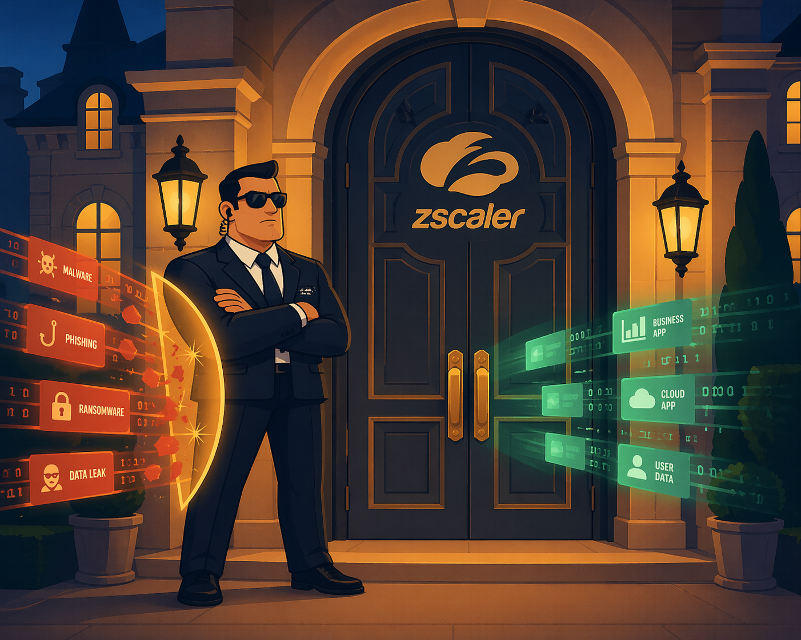
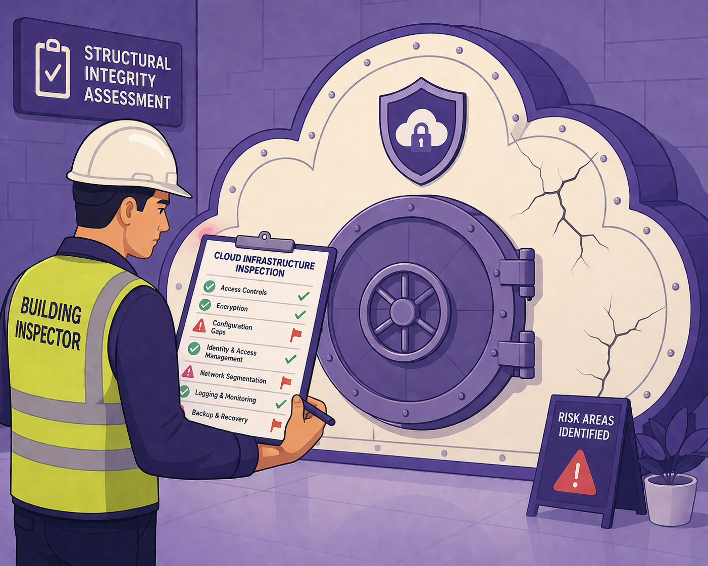

THE MEMORY PALACE
The Data Mansion
Each DLP method lives in a different room of a mansion. The room tells you where the data lives, the furniture tells you how it's protected. Walk through the rooms and the distinctions become second nature.
Room 1 — The Front Door
DLP INLINE
Every visitor (data packet) must pass through the guard at the door. The guard can block, allow, or quarantine in real time. Watches all web traffic flowing through Zscaler — any destination.

▶🎨 IMAGE PROMPT
A vigilant security guard in a suit standing at the grand front door of a mansion, arms crossed, blocking a stream of glowing data packets trying to enter. Some packets are stopped mid-air, others are waved through. The door has a Zscaler logo etched into it. Clean flat illustration style, warm amber and navy palette, minimal detail.
Room 2A — Office Floor (Guard Post)
CASB INLINE
A specialist guard stationed specifically at the cloud app entrance. Like DLP inline but with extra context — knows which tenant you're talking to (e.g. corporate OneDrive vs personal OneDrive) and what you're doing inside it.
▶🎨 IMAGE PROMPT
A specialist cloud security guard standing at a glowing doorway labelled "Cloud Apps", holding a clipboard showing corporate vs personal tenant labels. A stream of data packets flows toward the door — the guard inspects each one and checks a tenant ID badge before letting them through. Flat illustration, blue and white palette, clean and modern.
Room 2B — Office Floor (Auditor's Desk)
CASB API / OUT-OF-BAND CASB
An auditor with a keycard who walks directly into OneDrive, SharePoint, Salesforce, Dropbox, etc. via API — scanning files already stored there. Doesn't care how the file arrived. Cannot block an upload mid-flight. Supports Retro Scan (historical) and Iterative Scan (new/modified files via webhooks).
▶🎨 IMAGE PROMPT
An auditor in a suit holding a large keycard, walking into a filing room filled with cloud storage boxes labelled OneDrive, Dropbox, Salesforce. The auditor scans through already-filed documents with a magnifying glass. No stream of incoming data — the room is still and the files are settled. Flat illustration, cool blue and grey palette.
Room 3 — The Cloud Vault
DSPM — DATA SECURITY POSTURE MANAGEMENT
Not catching individual events — conducting a full building inspection of your cloud environment. Asks: "Where is all our sensitive data, who can access it, and are we configured securely?" Operates in three steps: Discover → Map & Track Risk → Remediate.

▶🎨 IMAGE PROMPT
A building inspector in a hard hat and hi-vis vest, clipboard in hand, examining the structure of a large cloud-shaped vault. The inspector is marking off a checklist — some items ticked green, others flagged red for risk. Flat illustration, purple and cream palette.
Room 4 — The Employee's Desk
ENDPOINT DLP
Protects data on the device itself — catching actions that never touch the network. USB transfers, Bluetooth, printing, clipboard copy-paste. All the things DLP inline is completely blind to.
▶🎨 IMAGE PROMPT
A laptop on a desk with a small shield icon glowing on the screen. A USB drive being plugged in is met with a red warning glow. A printer nearby shows a blocked print warning. No network cables or internet — all action is local. Flat illustration, green and cream palette, cozy desk scene.
FULL PALACE ILLUSTRATION
The Complete Mansion
Use the prompt below to generate a single illustration showing all five rooms of the DLP mansion at once — a great revision poster.
▶🎨 FULL SCENE IMAGE PROMPT
A cross-section illustration of a grand mansion with five distinct rooms, each labelled. Room 1 (Front Door): a security guard blocking glowing data packets at the entrance — labelled "DLP Inline". Room 2A (Office Floor Guard): a specialist guard at a cloud app doorway checking tenant badges — labelled "CASB Inline". Room 2B (Auditor's Desk): an auditor with a keycard scanning filing cabinets labelled OneDrive, Dropbox — labelled "CASB API / OOB". Room 3 (Cloud Vault): a building inspector with a clipboard examining a cracked cloud-shaped vault — labelled "DSPM". Room 4 (Employee's Desk): a laptop with a glowing shield, a blocked USB and printer — labelled "Endpoint DLP". Flat illustration style, warm editorial palette of amber, navy, cream and orange.
AT A GLANCE
The Five Methods Compared
| Method | Data State | Enforcement | Bypasses Zscaler? | Catches USB/Print? |
|---|---|---|---|---|
| DLP Inline | In motion | Real-time block | ❌ Blind if bypassed | ❌ No |
| CASB Inline | In motion | Real-time block | ❌ Blind if bypassed | ❌ No |
| CASB API / OOB | At rest | After the fact | ✅ Still catches it | ❌ No |
| DSPM | At rest | Posture / proactive | ✅ Still catches it | ❌ No |
| Endpoint DLP | On device | Local enforcement | ✅ Doesn't need network | ✅ Yes |
ANALOGIES
The mental models that stick
SMOKE ALARM vs BUILDING INSPECTION
DLP Inline = smoke alarm — triggers the moment something bad happens, in real time.
DSPM = building inspection — proactively finds structural risks before something bad ever happens.
DSPM = building inspection — proactively finds structural risks before something bad ever happens.
SECURITY GUARD vs SECURITY CAMERA
Inline (DLP / CASB) = the guard at the door — can physically stop something.
OOB CASB = the camera in the corner — sees everything, but can only act after the fact.
OOB CASB = the camera in the corner — sees everything, but can only act after the fact.
CASB INLINE vs DLP INLINE
DLP inline is the front door guard — checks everyone going anywhere.
CASB inline is a specialist at the cloud app entrance — with extra intelligence about which cloud tenant you're talking to.
CASB inline is a specialist at the cloud app entrance — with extra intelligence about which cloud tenant you're talking to.
EXAM SCENARIOS
Test yourself
SCENARIO 1
An employee uploads a sensitive file to the organisation's OneDrive tenant from a device that bypasses Zscaler entirely. Which DLP method still catches it?
CASB API / OOB — it has a direct API keycard to the org's OneDrive tenant and scans what's stored there, regardless of how the file arrived. DLP Inline and CASB Inline are blind because traffic bypassed Zscaler.
SCENARIO 2
An employee copies PII from a Word doc and pastes it onto a USB drive. Which method catches this?
Endpoint DLP — USB transfers never generate network traffic. All inline methods are blind. Only the agent sitting on the device itself can see this action.
SCENARIO 3
Security team discovers an S3 bucket has been publicly exposed for 3 months with PII inside. What should have caught this?
DSPM — this is a posture/misconfiguration problem, not a data-in-motion event. DSPM's building inspection would flag the misconfigured bucket and provide remediation steps.
SCENARIO 4
An employee on an unmanaged personal device uploads sensitive company data to their personal OneDrive account, bypassing Zscaler entirely. Which DLP method catches it?
None. This is a genuine blind spot. CASB API/OOB only has API access to the org's sanctioned tenants — not personal accounts. DLP Inline and CASB Inline require traffic through Zscaler. Endpoint DLP requires an agent on the device. DSPM only scans org-owned cloud environments. The mitigation is Tenant Restriction policies — blocking access to non-corporate cloud tenants entirely.